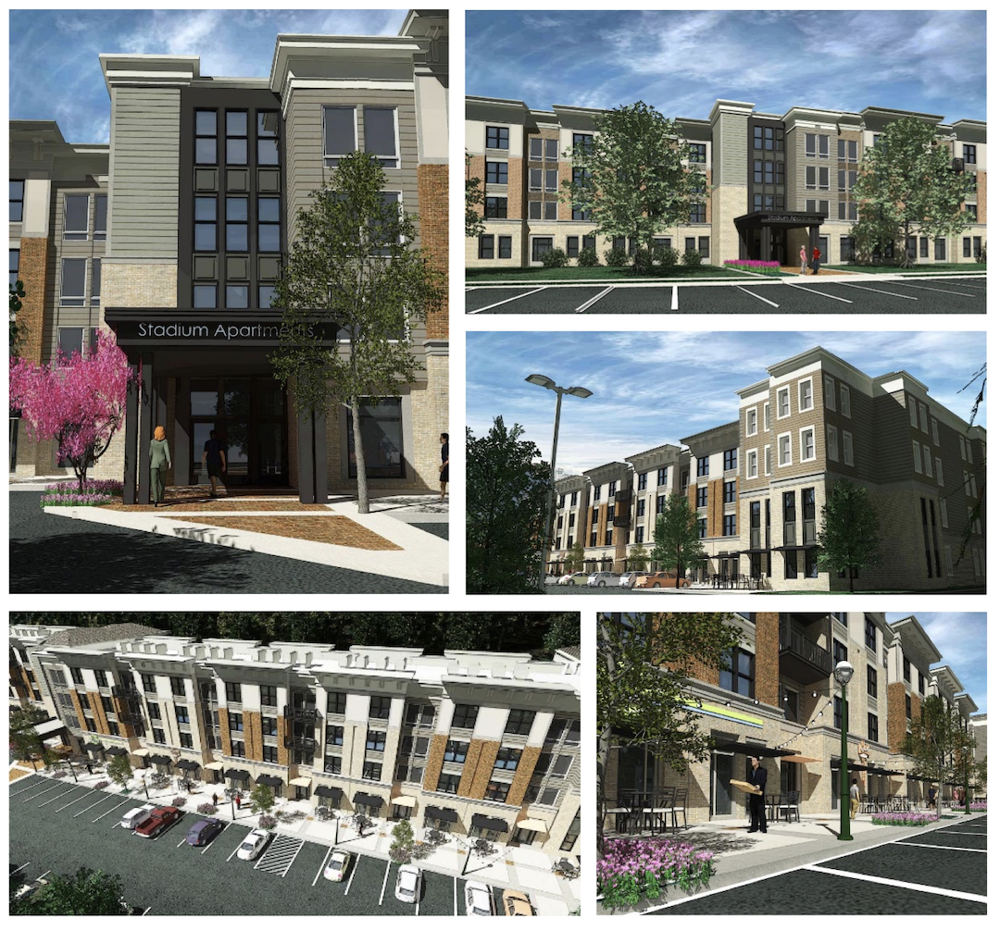

Should UNCA Build Housing on Land That It Owns?
July 2, 2025
This member commentary post does not necessarily reflect the views of Asheville For All or its members.
Sorry! The title of this blog post is pure clickbait. I’m not really going to answer the question in the title.
I do have some thoughts on the UNCA proposal to develop its “millennial” campus and the “Save the Woods” campaign that has arisen in its response. But I’m going to keep most of those thoughts to myself!
Instead of answering the question, I’m going to suggest that we need better questions when we talk about land use in Asheville.
So let’s back up. Consider how YOU might answer the question:
Should UNCA build housing on land that it owns?
- [ ] yes
- [ ] no
Now consider a different question:
UNCA students, faculty, and workers need housing. Where should the city push for such housing to be?
- [ ] on campus property
- [ ] in the Five Points neighborhood
- [ ] somewhere outside the city far away from me, and far away from the campus
Or maybe this question:
UNCA can no longer rely on funding from the state government, and needs to explore new avenues for revenue. (This is a trend that just about every state is experiencing.) Should we:
- [ ] give up, and diminish the presence of education and research in Asheville
- [ ] encourage UNCA to leverage its landed assets by strategically renting it out
- [ ] have UNCA fire more staff, close more programs, and reverse course on the school’s recent promise to help low-income students
These questions are all tilted in various ways, for sure. And maybe I’m being a little obnoxious in the last one. (Again, my intention is not to endorse the specific current UNCA plan.)
But I want to make the point that there’s something different with the last two questions that the first one lacks. They are structured in a way that illuminates trade-offs.

Going Beyond Yes/No in Housing Questions
I was thinking about this earlier this year, when various housing discourses were all circulating that appeared to boil down to simple yes or no questions.
- Should there be housing (or anything else) on UNCA’s “millennial campus”?
- Should there be more housing on Richmond Hill?
- Should there be more housing on Springside Road in South Asheville??
In isolation, it’s very easy to see why people’s responses to these questions might be “no.” None of these proposals are perfect, even (or maybe especially!) from what we might call a “pro-housing” or “urbanist” perspective.
But our city’s neighborhoods don’t exist in isolation. When it comes to housing, in particular, blocking new housing in one place comes with “spillover” effects. Or as my friend Scott puts it, every time you say “no” to something, you are tacitly saying “yes” to something else. So what are we saying “yes” to in these cases?1
With this last point in mind—that we must always be saying “yes” to something—here’s one more multiple choice question:
What should we say “yes” to?
- [ ] more sprawl, out-of-control housing costs, gentrification, homelessness, under-enrollment in our public schools, and a hollowed out tax base for public spending?
- [ ] less-than-perfect housing growth development patterns
Scott’s point, and mine, is that we need to be more explicit about trade-offs. But I want to suggest there’s one more possibility we could add to the question above:
- [ ] plan for the development that we want
Setting aside the case of UNCA, and looking at those of Richmond Hill and South Asheville, I would argue that one reason why such development is happening in these places is that we’ve made it hard to build housing in places that are more suitable for growth. Research has shown over and over again that housing markets are regional rather than isolated by neighborhood. And it shows that all things being equal, development is going to happen where land values are highest and infrastructure is ready. But in Asheville, as in many other cities suffering urban sprawl and high housing costs, bad policies tilt the scales and push new construction further out to peripheries.2
In other words: if the city refuses to pass meaningful “missing middle” reforms, it’s going to mean relatively less new construction in high-amenity, high-demand, more-walkable, close-in neighborhoods like Five Points, and relatively more construction on more peripheral corridors like Sweeten Creek Road.
The Richmond Hill and South Asheville examples are both cases of “conditional zoning” requests. Conditional zonings have their place, and I don’t mean to diminish them, but I think it’s fair to say that an abundance of them on city and county government agendas speaks to an absence of effective planning. Despite some promising recent changes, Asheville’s zoning code is still stuck in the 1990s, especially when it comes to the great majority of the city’s land area—that which is zoned for residential use.
Again I want to say that the UNCA question is somewhat distinct from the other ones we’ve been discussing. I don’t know that any degree of action on the part of the city to realize the goals laid out in its 2018 Comprehensive Plan or the policies suggested by the 2023 Asheville Missing Middle Housing Study would change the math there, as far as the institution’s finances are concerned.
(On the other hand, I’d love to hear the Five Points Neighborhood Association, which is fervently against the UNCA project, say something like “we will gladly play our part by welcoming much more infill housing in our neighborhood, if it means strengthening the argument against the proposed development!”)
But I do believe that thinking in terms of trade-offs—and in the process, asking “what do we want to happen?” or “what do we want to say yes to?”—would greatly benefit all of the current conversations around land use in Asheville.
Postscript
For this blog post, I was greatly inspired by a recent episode of the “War on Cars” podcast. The guest on this episode describes the idea of moving beyond “yes” or “no” questions and calls it “participatory value evaluation.” The concept, he explains, is to set the “full dilemma” in front of citizens, and in doing so, get a better picture of what people really value.
It’s worth a listen. The guest brings a lot of data and research to the table to suggest that the way that we frame these things really does matter.
-
Scott tells me that this is a quote that originally comes from Mitchell Silver, a Raleigh city councilor and former City of Raleigh Planning Director. ↩
-
To be clear: the South Asheville project on Springside Road, which is still very much up in the air after something like forty nearby residents complained at the Asheville Planning and Zoning Commission meeting in April, seems especially harmless to me, and if anything it will mean more homes for families in close, walkable proximity to county public schools. ↩
This member commentary post does not necessarily reflect the views of Asheville For All or its members.